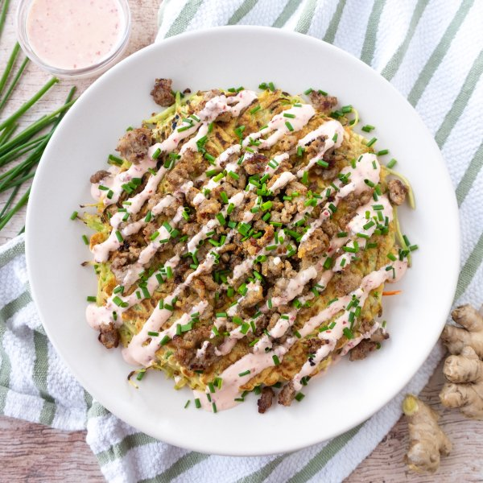

Japanese-Style Broccoli Slaw Pancake (Okonomiyaki) with Crispy Sausage

Total Time
40 min
Nutrition (per serving)
704.4 kcalCalories
33.5 gProtein
38.8 gCarbs
47.3 gFat
Full nutrition table
| Calories | 704.4 kcal |
| Total fat | 47.3 g |
| Saturated fat | 12.5 g |
| Trans fat | 0.2 g |
| Cholesterol | 249.3 mg |
| Sodium | 1088.5 mg |
| Carbohydrates | 38.8 g |
| Fiber | 5.1 g |
| Sugars | 3.7 g |
| Protein | 33.5 g |
| Potassium | 1051.7 mg |
| Calcium | 276.3 mg |
| Iron | 5.6 mg |
| Vitamin A | 998.2 IU |
| Vitamin C | 168.2 mg |
| Vitamin D | 62.5 IU |
Cookware
Ingredients
- 2 (12 oz) pkgbroccoli slaw
- 8 fl ozchicken or vegetable broth
- 1 small pkgchives
- 4eggs
- 2 clovesgarlic
- 2 (1 inch) piecesginger root
- 1lime
- 4pork sausages
- all-purpose flour
- baking powder
- chili-garlic sauce
- mayonnaise
- salt
- toasted sesame oil
Steps
- Wash and dry the fresh produce.2 (1 inch) pieces ginger root
1 small pkg chives
1 lime - Peel and mince ginger and garlic. Transfer both to a medium bowl.2 cloves garlic
- Add eggs and broth to the bowl with the ginger and garlic; whisk to combine and set aside.4 eggs
8 fl oz (1 cup) chicken or vegetable broth - Place flour, baking powder, and salt in a large bowl; whisk to combine. Gradually add the egg mixture to the bowl with the flour, whisking to create a smooth batter.1 cup all-purpose flour
2 tsp baking powder
1 tsp salt - Preheat a skillet over medium heat.
- While the skillet heats up, add broccoli slaw to the bowl with the batter and stir until thoroughly combined.2 (12 oz) pkg broccoli slaw
- Once the skillet is hot, add oil and swirl to coat the bottom. Add one-quarter of the pancake batter (1¼-cups per pancake) to the skillet and smooth out into a large, ½-inch thick pancake. Cook, flipping once, until golden brown and cooked through, 3-4 minutes per side. Remove to a plate and cover with foil.1 tsp toasted sesame oil
- While the pancake is cooking, preheat a medium saucepan over medium-high heat.
- While the pan heats up, use the tip of a knife to slice down the length of each sausage. Peel off casings and discard.4 pork sausages
- Add sausage meat to the pan and cook, breaking apart with a spoon, until crispy and cooked through, about 7 minutes. Remove from heat, cover, and set aside.
- Once the first pancake is done cooking, add more oil (1 teaspoon per pancake) to the skillet and repeat with remaining batter.1 tbsp toasted sesame oil
- Meanwhile, chop chives into small pieces and set aside.
- Juice the lime into a small bowl. Add mayo and chili-garlic sauce; whisk to combine the spicy mayo.¼ cup mayonnaise
1 tbsp chili-garlic sauce - To serve, place a pancake on each plate. Top with crispy sausage, drizzle with spicy mayo, and sprinkle with chives. Enjoy!